1.4 安装 Ubuntu¶
从安装介质入手¶
在 “安装 CentOS” 章节中我们已经学习了如何通过 .iso 文件制作一个引导安装U盘。Ubuntu 与 CentOS 引导安装U盘制作方式类似。
我们可以在清华大学镜像站 https://mirrors.tuna.tsinghua.edu.cn/ubuntu-releases/bionic/ 链接中下载我们需要 .iso 文件。Ubuntu 的版本分为两类：live-server 为服务器版本，desktop 为桌面版本。这里我们选择 live-server 服务器版本。
系统安装过程¶
将制作好的 Ubuntu 引导安装U盘插入服务器、台式机或笔记本，按下电源键后，进入 BIOS 修改启动引导顺序。
进入安装界面后，选择语言，Ubuntu Server 版系统安装界面并不支持简体中文，所以这里选择英文：
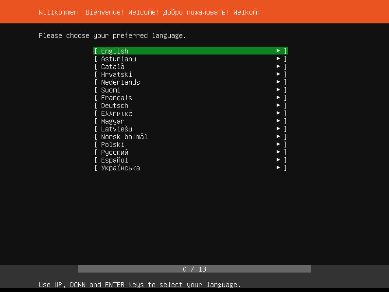配置键盘型号，这里还是选择英文键盘：
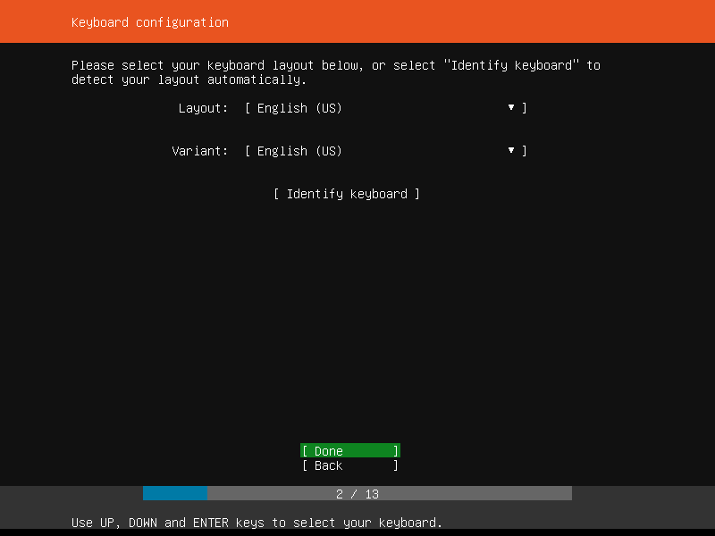配置网络，如果你的设备所在的网络环境中有 DHCP，则或自动获取到 IP 地址，若没有，可以手动配置IP地址：
DHCP 自动分配 IP 地址
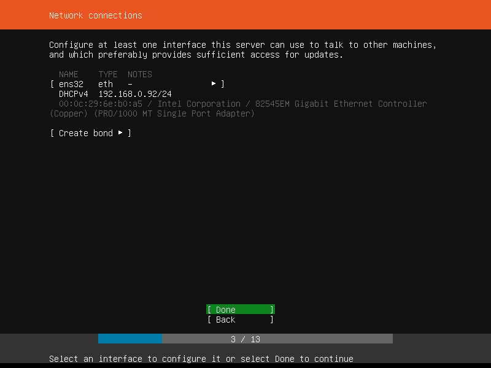手动配置 IP 地址
选择网卡
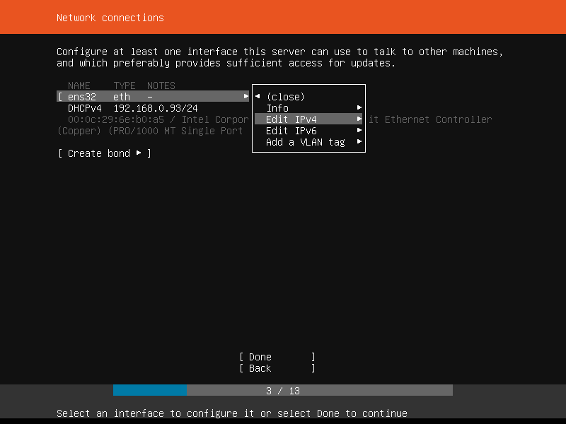修改 DHCP 获取为手动配置静态地址
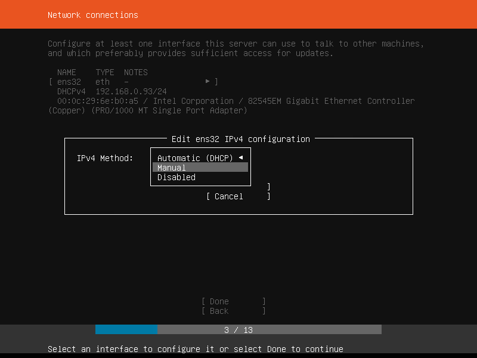配置IP地址相关信息
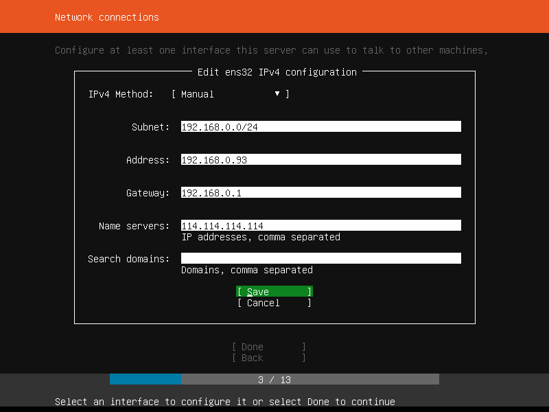静态地址配置完成
配置代理，当网络访问软件源的网络可达性不佳时，我们可以设置代理来提高系统访问软件源的网络速度，在中国有很多的镜像站，所以这里代理配置可以跳过：
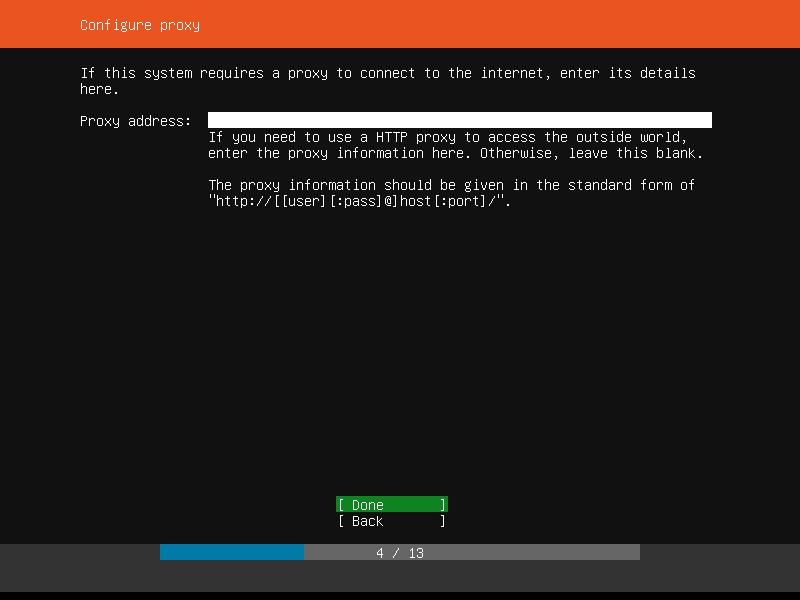配置 ubuntu 镜像源地址，在中国 Ubuntu 有镜像站，所以这里使用默认即可：
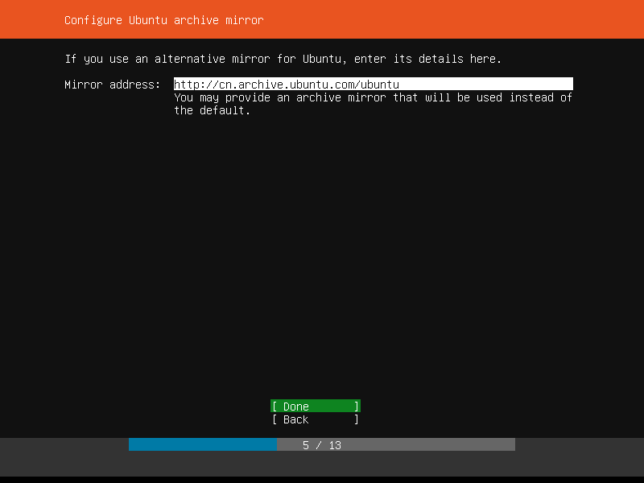配置文件系统：
选择使用整个磁盘
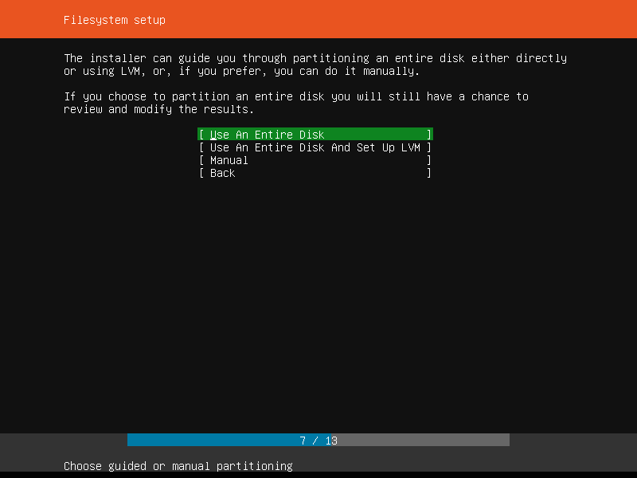
选择磁盘进行安装
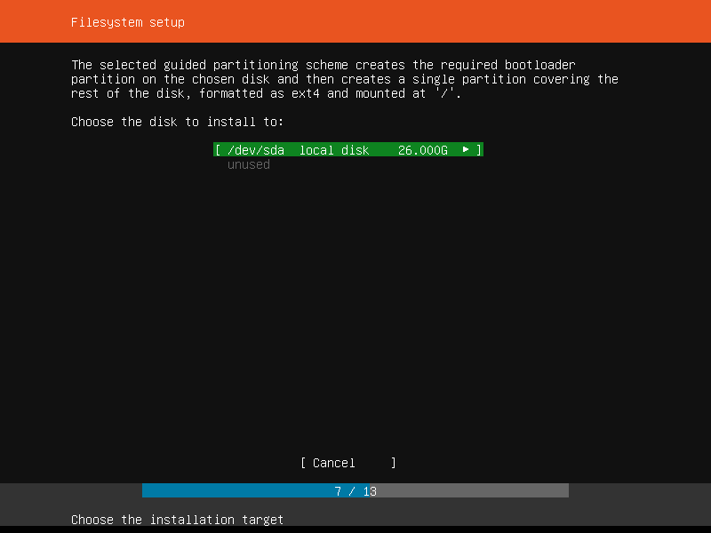
查看文进系统摘要
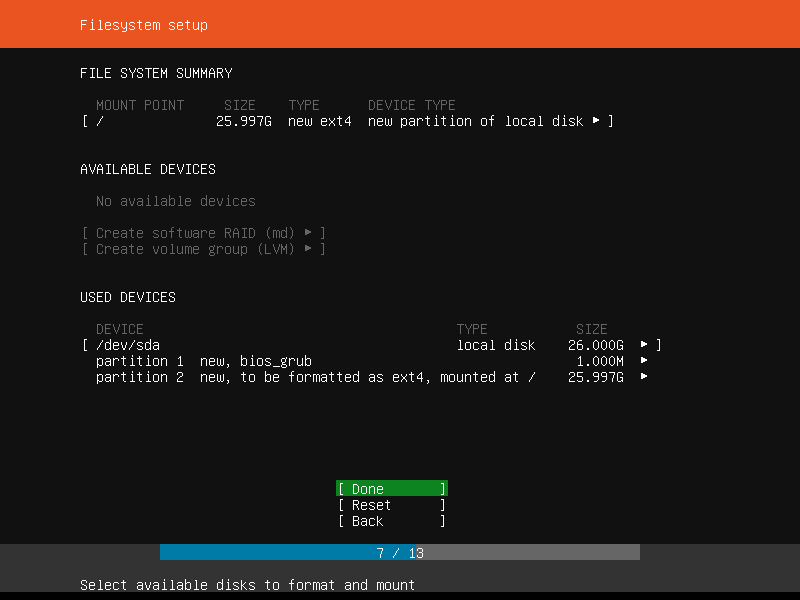
确认销毁操作
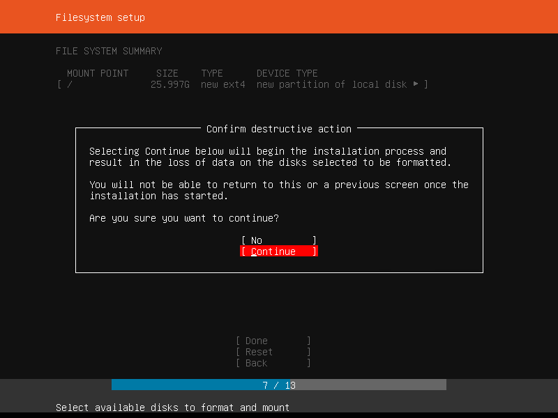
配置账号信息。Ubuntu 默认不设置 root 用户密码，系统安装完成后可以在系统内对 root 用户设置密码。此处新创建的用户具有管理员权限：
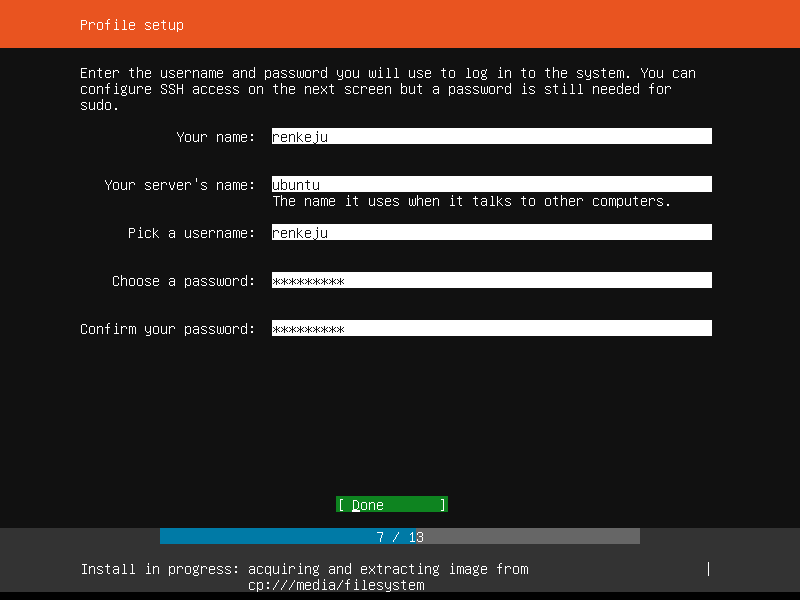启动 SSH 服务。建议开启 SSH 服务，方便后面对服务器进行远程登录管理：
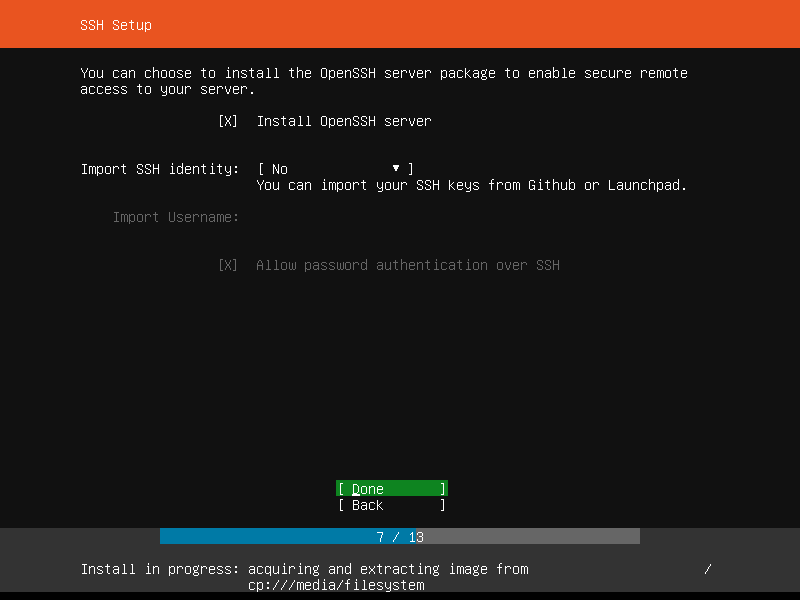安装系统：
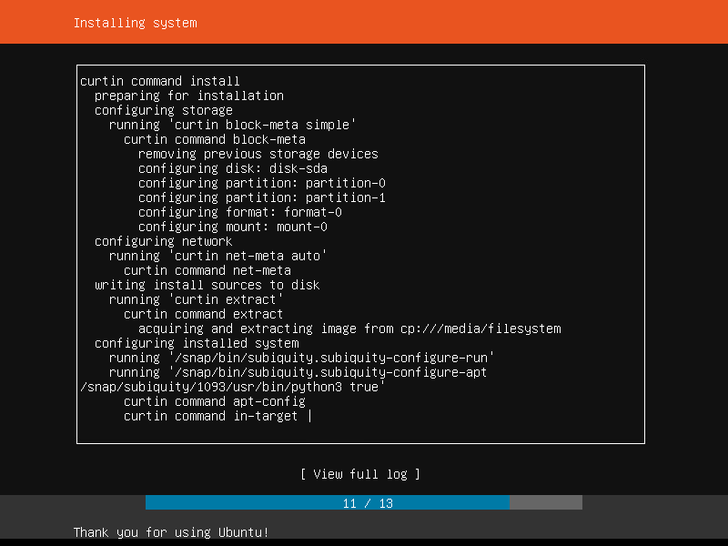 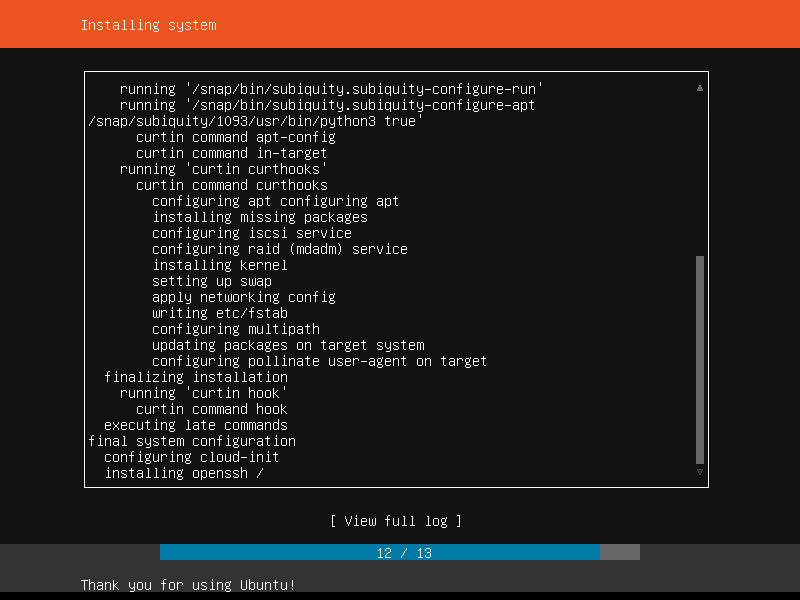系统安装完成后，需要按 Ehter 键确认重启系统：
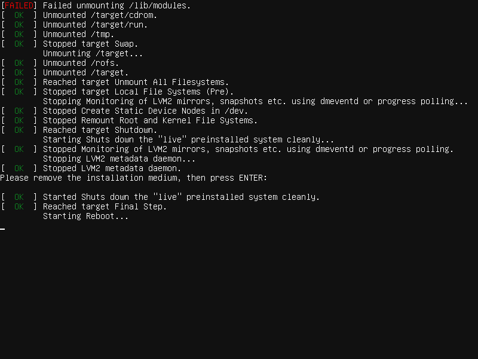登录¶
此时我们已经完成了 Ubuntu 18.04 Linux 系统的安装，下面我们登录 Ubuntu Linux 系统。首先我们会看到 Ubuntu Linux 的启动选项：